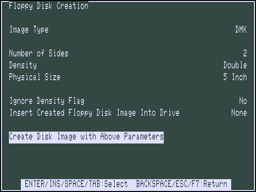
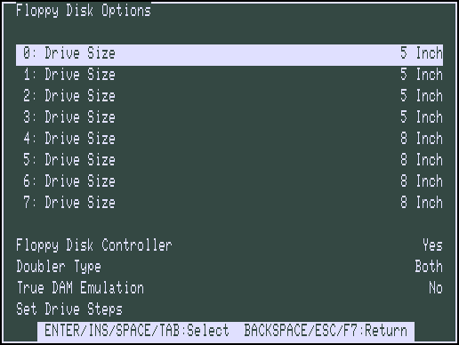
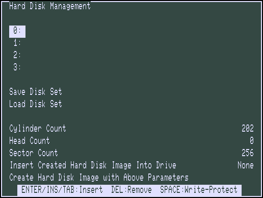
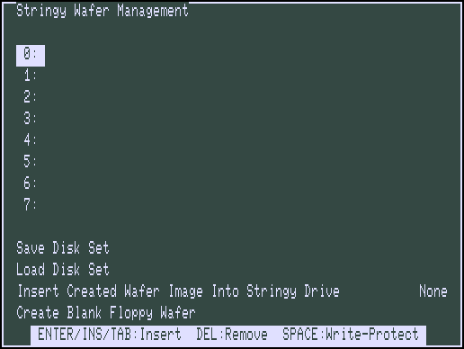
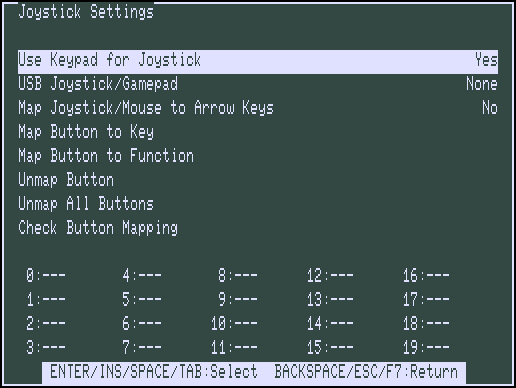
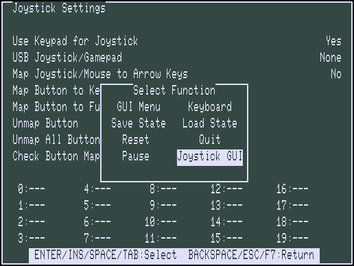
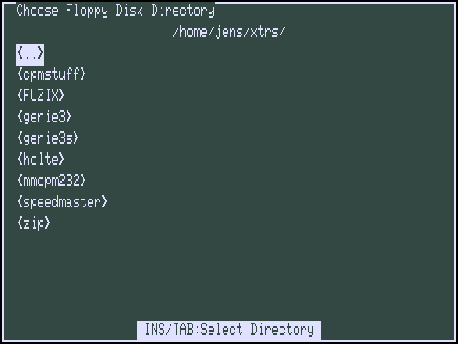

|
SDLTRSText GUIIntroduction | Features | Options | Text GUI | Known Bugs | Release History | Credits |

The main menu is the entry point for the Text GUI. You may move up and down through the menu items using the arrow keys. The Home and End keys moves to the first or last menu item. Typing the first letter of a menu item marks it for selection. Pressing a number key from 0 to 9 jumps to the line in the menu. A menu item may be selected by pressing the Enter, Insert, Space or Tab key when the item is highlighted. Pressing F7, BackSpace or ESC moves up a menu level (or exits the GUI if you are at the top level). Besides entering the GUI using F7, Alt-M or Alt-Comma, submenus may be entered by using the key shortcuts shown after the menu items.
The floppy disk management menu allows you to insert and remove floppy images into the emulated drives, as well as save and load disk sets, create new disk images, and set emulated disk drive options.
For the first 8 options in the menu, there are three options:
This option allows the user to save the names of the disk images that are
currently in the drives to a file, to be loaded later. The file that the set
is save in has an extension of .set, and it is a human readable
text file, containing the paths of the image files, or a blank line for a
drive for a drive that has no disk.
This button allows the user to load a disk set saved earlier with the Save
Disk Set Button. The user is allowed to browse for the set file, displaying
files ending in .set. The emulator then loads the disk images
specified in the file into the corresponding drives. If a drive in the set
file is a blank line, no changes are made to the drive. This allows the user
to load multiple disk sets sequentially.
When the user presses Enter on a Drive item in the Floppy Disk Management screen, the file open menu is displayed. The arrow keys and page up/down may be used to scroll through the list of files. Home and End moves to beginning or end of the list. Pressing Enter on the <..> item will take you to the parent directory. On Windows, the Drive letters are listed as the last items in the menu, and you can change drives by pressing Enter on those items. You may also go to a particular section of the file list by pressing the first letter of the file name.

In the Floppy Creation screen, you may choose a format of a disk. It may be created in either the JV1, JV3, or DMK disk image format (See the Features page for info on the disk formats).
If the "Insert Created Disk Into This Drive" is set to something besides none, the created image will be mounted on the specified floppy drive.

The first eight items allows you to set the size of each disk drive, as either a 5" or 8" drive.
Enables or disables the Floppy Disk Controller (Expansion Interface) of the TRS-80. Without activated FDC, ROM BASIC is booted and access to floppy disks is not possible.
Specify what type of double density adaptor to emulate (Model I mode only). The type may be Percom, Tandy, Both, or None. The default is Both, which causes the double density adaptor emulation to respond to the special commands of both the Percom and Tandy cards.
Turn off the single density data address mark remapping kludges described in the "Emulated floppy disks" and "Real floppy disks" sections above. With this option given, the distinction between F8 and FA data address marks is strictly observed on both writing and reading. This option is probably not useful unless you need to deal with Model I disks that use the distinction as part of a copy-protection scheme.
Note: only on Linux there is the last menu that allows to set the drive steps for real floppys:

The hard disk management menu allows you to insert and remove floppy images into the emulated drives, as well as save and load disk sets and create new disk images.
For the first 4 options in the menu, there are three options:
This option allows the user to save the names of the disk images that are
currently in the drives to a file, to be loaded later. The file that the set
is save in has an extension of .set, and it is a human readable
text file, containing the paths of the image files, or a blank line for a
drive for a drive that has no disk.
This button allows the user to load a disk set saved earlier with the Save
Disk Set Button. The user is allowed to browse for the set file, displaying
files ending in .set. The emulator then loads the disk images
specified in the file into the corresponding drives. If a drive in the set
file is a blank line, no changes are made to the drive. This allows the user
to load multiple disk sets sequentially.
The next three options allows you to specify parameters for creating a hard disk image (See the Features page for info on the hard disk formats).
If the "Insert Created Disk Into This Drive" is set to something besides none, the created image will be mounted on the specified hard drive.
The final option allows you to create a blank hard disk image.

The cassette management menu allows you to insert and remove cassette images into the emulated drive, as well as create new cassette images.
For the first option in the menu, there are three options:
The second option allows you to set the position of the cassette tape by changing the Position field. Valid values are 0 (fully rewound) through the number of bytes on the tape (at end of tape).
The third option allows you to define the default sample rate in Hz.
The fourth option allows you to choose a format of a cassette
(.cas or .wav).
If the "Insert Created Cassette Into Drive" is set to Yes, the created image will be used in the cassette drive.
The final option allows you to create a blank cassette image.

The stringy wafer management menu allows you to insert and remove wafer images into the emulated drives, as well as save and load disk sets, and create new wafer images with default parameters.
For the first 8 options in the menu, there are three options:
Specifies what TRS-80 model to emulate. Selecting a different model will perform a "Cold Boot" in the Emulator after exiting the Emulator Settings.
The default CPU speed of the selected TRS-80 model can be changed here, but use this with CAUTION: overclocking the Z80 will result in all forms of "timing-errors"!
Selects the speed-up modification for the TRS-80 Model I: None,
Archbold, Holmes or Seatronics. Select Banking
for memory banking (by Martin Doppelbauer) on I/O-port 0xFE.
LNW80 sets the CPU clock to 4 MHz and enables banking for the 480*192
HRG in the lower 16 KB. Use TCS SpeedMaster for this enhanced Model I
clone running at 5.35 MHz, with 480*192 HRG and memory banking support. Set
CT-80 Aster for emulation of the dutch TRS-80 model I clone.
Emulates up to 8 Stringy Floppy Drives for the TRS-80 Model I.
Emulate a "Lowercase Modification Kit" for the TRS-80 Model I.
Emulates the "Lubomir Soft Banker" from Schmidtke electronic (Germany) for the TRS-80 Model I.
In Model III or 4/4P mode select which Hi-Res graphics card to emulate, the Micro-Labs Grafyx Solution Hi-Res graphics card or Radio Shack Hi-Res card. In Model I mode, the HRG1B 384x192 Hi-Res graphics card is emulated. Note that the Model III and Model 4/4P cards from Micro-Labs are very different from one another.
The Lowe Electronics LE18 Graphics Adapter can also be emulated.
Various memory expansions can be emulated for a total of 4 MB RAM.
Specifies the foreground and background color of the SDLTRS window.
Default is white (0xE0E0FF) for foreground and black
(0x000000) for background.
Specifies the foreground and background color of the fullscreen Text GUI.
Default is white (0xE0E0FF) for foreground and dark green
(0x344843) for background.
Select among several sets of built-in character bitmaps. The three different options allow you to specify the character set used for each model, should you change models during SDLTRS execution using the GUI. In Model I mode, seven sets are available. The default, Wider, is a modified Model III set with characters 8 pixels wide; it looks better on a modern computer screen with square pixels than the real Model I fonts, which were 6 pixels wide. LCmod is the character set in the replacement character generator that was supplied with the Radio Shack lower case modification. Stock is the character set in the stock character generator supplied with most upper case only machines. Since SDLTRS currently always emulates the extra bit of display memory needed to support lower case, this character set gives you the authentic, unpleasant effect that real Model I users saw when they tried to do homebrew lower case modifications without replacing the character generator: lower case letters appear at an inconsistent height, and if you are using the Level II BASIC ROM display driver, upper case letters are replaced by meaningless symbols. early is the same as stock, but with the standard ASCII characters [, \, ], and ^ in the positions where most Model I's had directional arrows. This was the default programming in the Motorola character generator ROM that Radio Shack used, and a few early machines were actually shipped with this ROM. Genie gives an emulation of the Genie I/II (relabled Video Genie in Germany) with German characters ("Umlauts"). HT-1080Z emulates the HT-1080Z (relabled Video Genie in Hungary) with accented Hungarian characters. Meritum I is the uppercase charset of a TRS-80 Model I clone in Poland, build by Mera-Elzab. Video Genie displays the character set of the EACA Video Genie (also labeled as the System 80 in Australia/New Zealand and PMC-80/81 in North America). CT-80 Aster is the character set of the dutch, improved TRS-80 Model I clone.
In Model III, 4 and 4P modes, three sets are available:
Katakana (the default for Model III) is the original Model III set with Japanese Katakana characters in the alternate character positions. This set was also used in early Model 4's. International (the default for Model 4 and 4P) is a later Model 4 set with accented Roman letters in the alternate positions. Bold is a bold set from a character generator ROM found in one Model III, origin uncertain.
Put a border of width pixels around the TRS-80 display. default is 2.
In Model 3 mode, resize the window whenever the emulated display mode changes between 64x16 text (or 512x192 graphics) and 80x24 text (or 640x240 graphics).
In Model 4/4P mode, resize the window whenever the emulated display mode changes between 64x16 text (or 512x192 graphics) and 80x24 text (or 640x240 graphics).
This options allows scaling of the SDLTRS window by the selected factor: "none", "2 x", "3 x" or "4 x".
This option allows the user to chose if disk activity indicators and Turbo Mode LED are shown in the TRS-80 Emulator window (lower edge).
This option draws Scanlines on every second line of the emulator screen to simulate the pixel resolution of an old CRT monitor. The brightness of the scanlines can be adjusted from 0 (= dark) to 255 (= light).
Selecting this option will cause the printer output file to be closed, and the next file will be automatically created.
Turn on/off ability for emts (Emulation traps) to write to unexpected places in the host filesystem.
Set the year for TRS-80 time-of-day clock instead of the current year.
This can useful for TRS-80 operating systems that behave better when the year
is within a limited range. Enter year including the century or 0
(default setting) to use the current year.
Fine-tune the keyboard behavior. To prevent keystrokes from being lost, SDLTRS "stretches" the intervals between key transitions, so that the Z80 program has time to see each transition before the next one occurs. Whenever the Z80 program reads the keyboard matrix and sees an emulated key go up or down, SDLTRS waits cycles Z80 clock cycles (T-states) before it allows the program to see another key transition. Key transitions that are received during the waiting period or when the Z80 program is not reading the keyboard are held in a queue. The default stretch value is 4000 cycles; it should seldom if ever be necessary to change it.
Controls the type of printer emulation that is used for outputting to the
TRS-80 printer: None and Text.
Text simply sends the printer output to a text file (automatically
created from trsprn0000.txt to trsprn9999.txt).
Set the tty device to be used for I/O to the TRS-80's serial port. Setting the name to be empty emulates having no serial port.
Set the sense switches on the Model I serial port card. This option is
meaningful only in Model I mode, and only when the Serial Port Name is not
set to "". The default value is 0x6f, which Radio Shack software
conventionally interprets as 9600 bps, 8 bits/word, no parity, 1 stop bit.
Chose Shift Bracket Emulation on or off. If on, emulate [, \, ], ^, and _ as shifted keys, and {, |, }, and ~ as unshifted. This is the default in Model 4 and 4P modes, and it works well with the keyboard driver in Model 4 TRSDOS/LS-DOS 6. If off, emulate [, \, ], ^, and _ as unshifted keys, and {, |, }, and ~ as shifted. This is the default in Model I and III modes, and it works well with many TRS-80 keyboard drivers. With some keyboard drivers these keys do not work at all, however.
Turn Sound Output on or off. The Alt-U key binding may be used to switch Sound Output on or off while running the emulator.
This will turn Turbo mode on or off. When turbo mode is on, the emulator will run faster than a normal TRS-80, by a factor of Turbo Rate, which is explained below, and also set on this page. The F12 key or Alt-N may be used to switch Turbo mode on or off while running the emulator.
Set the number of times normal TRS-80 speed that the emulator runs when in "Turbo" mode. Turbo mode can be used to speed compute intensive applications, compiling source code for example, on the emulator. The default setting is 5x. Above around 8x you may experience problems with runaway keyboard repeat on the emulator, so use higher values with caution.
While pasting from the clipboard to the TRS-80 emulator, Turbo mode is temporarily activated.
This menu item allows you to save the state of the emulator, so that it may be loaded later with the Load State command. Disk images inserted into the computer are stored in the state file.
This menu item allows you load a state file (.t8s) previous
saved with the Save State command.
This menu item allows you to save the configuration of the emulator, so
that it may be loaded later with the Load Configuration command.
Configuration files (.t8c) are discussed further on the Features page.
This menu item allows you load a Configuration file (.t8c)
previous saved with the Save Configuration command.

This item determines if the numeric keypad is used for emulation of a joystick.
This item allows the user to select which USB joystick, if any, is used for emulation of the TRS-80 Joystick. It will bring up a list of the USB joysticks that SDL is aware of as shown below:

These options allows the user to map keys or functions of SDLTRS to Joystick buttons. Use "Write Configuration File" in the Configuration/State File Management menu to save the mapping.
This menu allows the user to specify the default directories used for loading/saving various types of file used by the emulator. To choose the directory, press Enter when the appropriate entry is highlighted. That will bring up the Directory select screen. The arrow keys, page up/down and Home/End may be used to scroll through the list of directories. Pressing Enter on the <..> item will take you to the parent directory. On Windows, the Drive letters are listed as the last items in the menu, and you can change drives by pressing Enter on those items. The directory is selected by pressing the Insert or Tab key.

This menu allows you to chose the ROM files used in the emulation of the TRS-80. These files are not provided with the emulator. To select the file, press Enter when the appropriate item is highlighted, and the file selection menu will appear. It's operation is explained in the Floppy Disk section above.